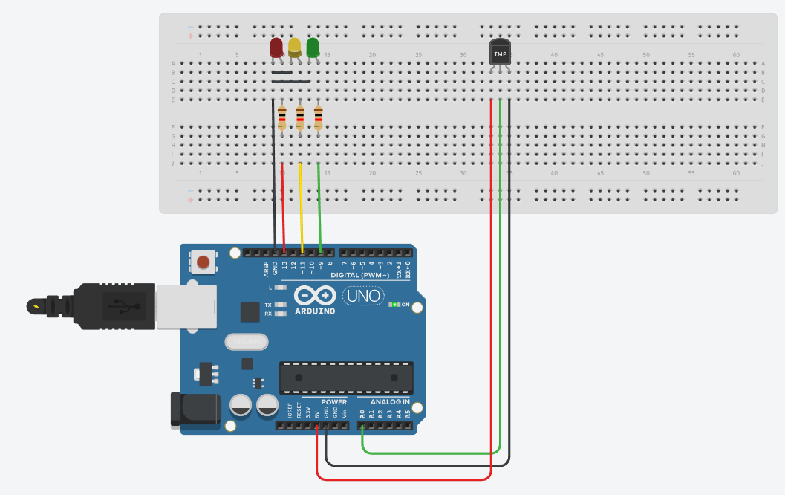

Siguiente Práctica
En esta práctica vamos a usar un sensor analógico (sensor de temperatura) para controlar el encendido de las tres bombillas del semáforo.
Según el valor que aporte el sensor se encenderá una bombilla u otra.
En esta práctica vamos a usar un sensor analógico (sensor de temperatura) para controlar el encendido de las tres bombillas del semáforo.
Según el valor que aporte el sensor se encenderá una bombilla u otra.
Según el valor de la temperatura el sensor aportará un nivel de señal y se encenderá la bombilla correspondiente.
Para esta práctica vamos a necesitar los siguientes componentes:
Lee atentamente:
Ver montaje:

¿Si quieres ayuda con el código?, mira aquí:
/* ACTIVIDAD
Debemos encender los LEDs en función del nivel de luminosidad
*/
const int LEDR = 13; // Indica dónde se conecta el LED rojo
const int LEDA = 11; // Indica dónde se conecta el LED amarillo
const int LEDV = 9; // Indica dónde se conecta el LED verde
const int temp = 0; //variable que nos va a indicar los valores del termistor
int val = 0; // variable usada para guardar el valor devuelto por la salida analógica del termistor (entre 0 y 1023)
void setup()
{
pinMode(LEDR, OUTPUT); // Se define el pin LEDR como Salida
pinMode(LEDA, OUTPUT); // Se define el pin LEDA como Salida
pinMode(LEDV, OUTPUT); // Se define el pin LEDV como Salida
pinMode(temp, INPUT); // Se define el pin temp como Entrada
}
void loop()
{
unsigned int adcValue = analogRead(temp); //Lee el sensor analógico
float tension = adcValue;
val = analogRead (0);
if(val<=100){
digitalWrite(LEDR, HIGH); // Define el estado de LEDR_PIN a HIGH
digitalWrite(LEDA, LOW); // Define el estado de LEDA_PIN a LOW
digitalWrite(LEDV, LOW); // Define el estado de LEDV_PIN a LOW
}
else if ((val>100) and (val<200)){
digitalWrite(LEDR, LOW); // Define el estado de LEDR_PIN a LOW
digitalWrite(LEDA, HIGH); // Define el estado de LEDA_PIN a HIGH
digitalWrite(LEDV, LOW); // Define el estado de LEDV_PIN a LOW
delay(1000); // Espera 1 segundo
}
else {
digitalWrite(LEDR, LOW); // Define el estado de LEDR_PIN a LOW
digitalWrite(LEDA, LOW); // Define el estado de LEDA_PIN a LOW
digitalWrite(LEDV, HIGH); // Define el estado de LEDV_PIN a HIGH
delay(1000); // Espera 1 segundo
}
}
Obra publicada con Licencia Creative Commons Reconocimiento No comercial Compartir igual 4.0